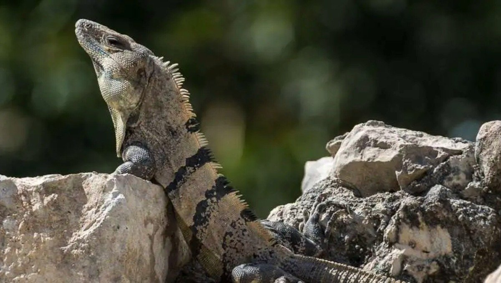

El toloc es un tipo de lagarto que habita en zonas cálidas. Es conocido por su rapidez y su capacidad para trepar.
Vive en zonas tropicales, selvas y áreas con vegetación.
Se alimenta de insectos pequeños y otros invertebrados.